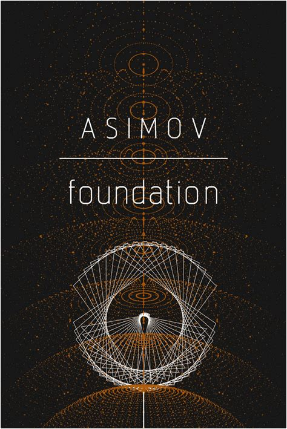
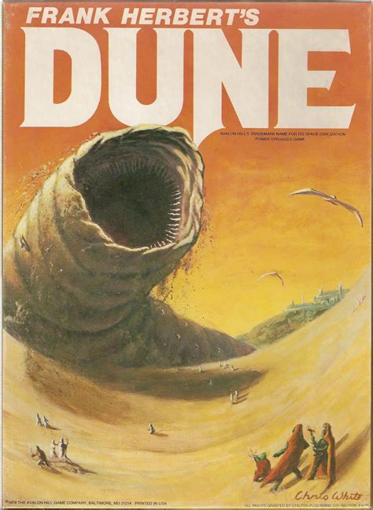
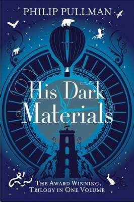

Adaptions
Foundation - Isaac Asimov
The seminal work of the 'Grandfather of SciFi' Isaac Asimov has finally been adapted into a television series created by David S. Goyer and Josh Friedman for Apple TV+, released on September 24, 2021
Dune - Frank Herbert
Feature adaptation of Frank Herbert's science fiction novel, about the son of a noble family entrusted with the protection of the most valuable asset and most vital element in the galaxy. Directed by Denis Villeneuve and releases October 21st 2021.
His Dark Materials (Trilogy) - Phillip Pullman
His Dark Materials is one of the supreme works of imaginative fiction for both children and adults published in the 20th century. This television adaption is produced by Bad Wolf and New Line Productions, for BBC One and HBO and was released on the 3rd November 2019 on BBC One in the United Kingdom,